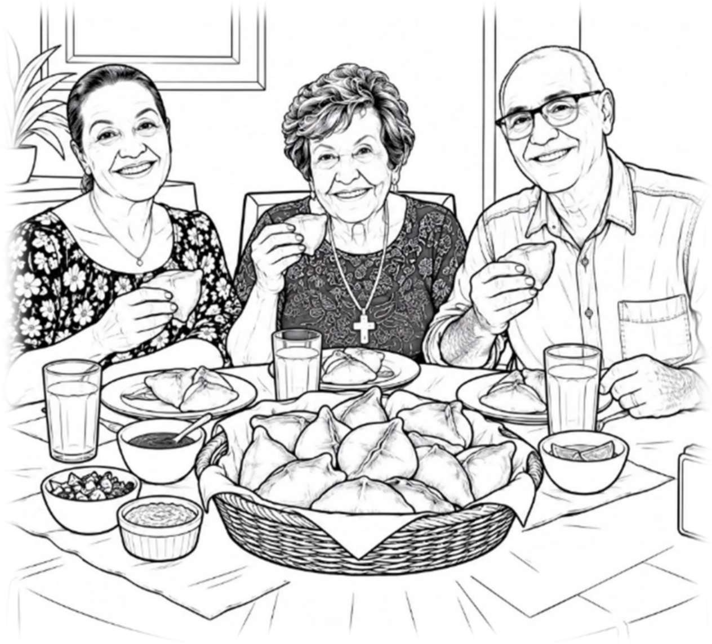
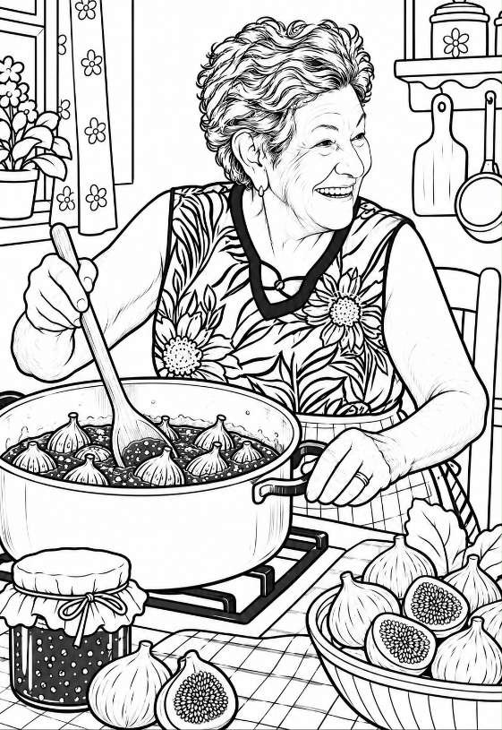

Meu Filho do Coração

Chico, meu menino, meu filho do coração, está sempre ao meu lado.
Desde pequeno, era assim: para lá e para cá, grudado em mim. Eu o carregava no colo pela casa, e ele não queria outro lugar no mundo. Onde eu estava, lá estava o Chico. Era o meu grude.
O menino cresceu, e a vida foi juntando histórias. Tantos momentos, tantas aventuras… até esconder a Nilza aqui em casa para os dois namorarem! Segredo bem guardado, como as minhas receitas.
Hoje, quando ele chega, me abraça, me beija e, antes que eu diga qualquer coisa, canta para mim:
“Te carreguei no colo, menino, cantei pra te dormir…”
E eu, que um dia embalei aquele menino, agora sou embalada por ele.
Chico não nasceu de mim. Mas cresceu no meu colo, no meu quintal e na minha cozinha. Faz parte da minha vida, da minha família e mora para sempre no meu coração.
Meu filho querido, um amor que o tempo só fez crescer.
— Zelinda
